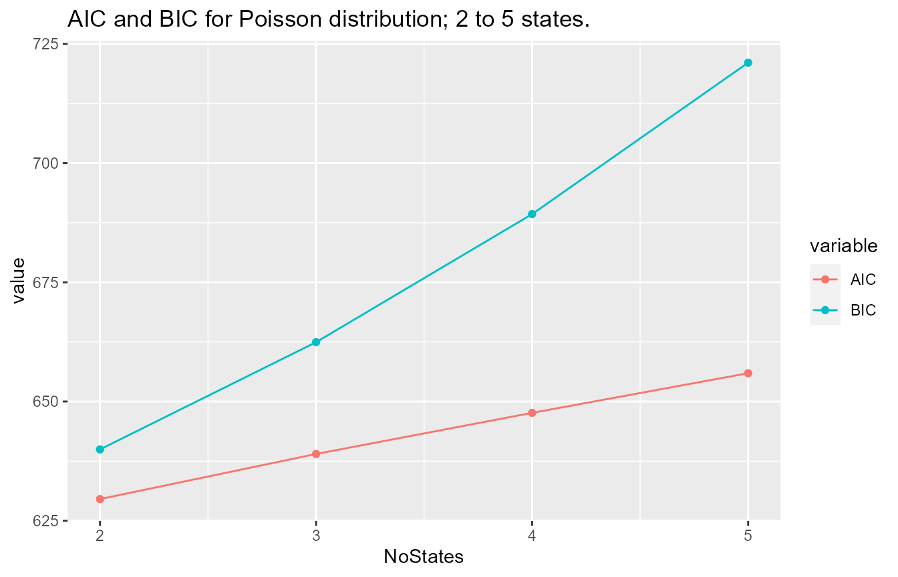
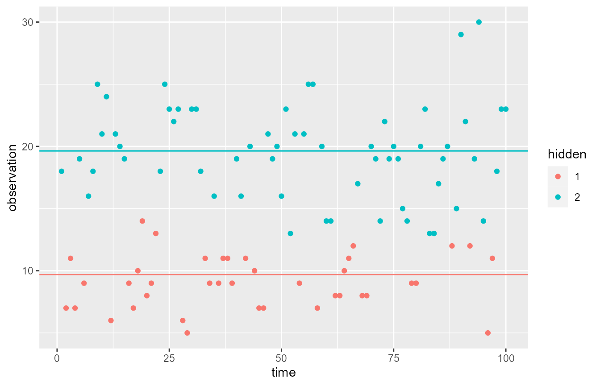

fitHMM
fitHMM.RmdHidden Markov Models
A hidden Markov model (HMM) is a simple and flexible model for data with serial dependence that consists of two parts, the observed sequence, which we will denote by \(X_1,\dots,X_T\), and the hidden sequence, which we will denote by \(C_1,\dots, C_T\). It is assumed that the hidden sequence constitutes a first order homogeneous Markov chain with finite state space \(\{1,\dots,m\}\), i.e. \[ P(C_t = j\;\vert\;C_1 = i_1,\dots, C_{t-2}=i_{t-2}, C_{t-1} = i) = P(C_t=j\;\vert\; C_{t-1} = i) = \gamma_{ij}, \] for any \(i,i_1,\dots,i_{t-1}\in\{1,\dots,m\}\) and any \(t\in\{2,\dots,T\}\). The initial distribution of the Markov chain, i.e. the distribution of \(C_1\), is described by the initial probabilities: \[ P(C_1 = i) = \delta_i, \] For any \(i\in\{1,\dots,m\}\).
Furthermore, we assume that \[ P(X_t=x\;\vert\; X_1=x_1,\dots, X_{t-1}=x_{t-1}, C_1=i_1,\dots,C_{t-1}=i_{t-1}, C_t=i) = P(X_1=x\;\vert\; C_t=i) = p_i(x), \] for any \(x_1,\dots,x_{t-1},x\), any \(i_1,\dots,i_{t-1},i\in\{1,\dots,m\}\), and any \(t\in\{1,\dots,T\}\).
This can be depicted with the following graph structure: \[ \begin{matrix} C_1 & \rightarrow & C_2 & \rightarrow & \cdots & \rightarrow C_{T-1} & \rightarrow & C_T\\ \downarrow & & \downarrow & & & \downarrow & & \downarrow \\ X_1 & & X_2 & & & X_{T-1} & & X_T \end{matrix} \]
Calculating the Likelihood
Due to the dependence structure of an HMM, the likelihood can be calculated as \[ L(\theta) = \sum_{c_1=1}^m\cdots\sum_{c_T=1}^m\delta_{c_1}p_{c_1}(x_1)\prod_{t=2}^T(\gamma_{c_{t-1}c_t}p_{c_t}(x_t)). \] Despite having \(m^T\)-terms, it is possible to calculate in a simpler way using the forward algorithm. This involves calculating the forward probabilities \[ \alpha_t(i) = P(c_t=i,x_1,\dots,x_t), \] via the recursion \[ \alpha_1(j) = \delta_jp_j(x_1), \quad\text{and}\quad \alpha_{t+1}(j) = \sum_{i=1}^m \alpha_t(i)\gamma_{ij}p_j(x_{t+1}). \] The likelihood can then be calculated as \[ L(\theta) = \sum_{i=1}^m\alpha_T(i). \]
Estimating Parameters
Once the likelihood can be evaluated, it is possible to estimate the parameters of the HMM, i.e. the transition probabilities, the initial distribution, and the parameters of the emission distributions. Note that the initial distribution is not straightforward to estimate, since we only have one data point available. Thus it is sometimes assumed that the hidden Markov chain starts in its stationary distribution.
In the package, two methods of estimation are used. The first and perhaps most simple approach is to use numerical maximization of the likelihood function to estimate the parameters. This approach yields approximate maximum likelihood estimates, but quality of the results can depend quite a bit on the initial values selected.
The second approach is to use the Expectation Maximization (EM) algorithm, which in general can be used to find approximate maximum likelihood estimates in missing data problems. This can be applied to an HMM by thinking of the hidden Markov chain as missing data. In the HMM set-up, the EM algorithm is also know as the Baum-Welch algorithm. The algorithm iteratively updates the parameter estimates in two steps until convergence is reached. First, initial parameter values \(\theta_0\) are selected. Denote by \(\theta_t\) the parameter estimates in the \(t\)’th round of the algorithm. In the first step, called the E-step, of the \((t+1)\)’th iteration, the expectation under \(\theta_t\) of the log likelihood conditioned on the observed data is calculated, \[ Q(\theta\vert\theta_t) = E_{\theta_t}[\log L(\theta\vert X,C)\vert X=x]. \] In the second step, called the M-step, of the \((t+1)\)’th iteration, we update the parameter estimates, \[ \theta_{t+1} = \arg\max_{\theta}Q(\theta\vert\theta_t). \] Again, the results may vary depending on the choice of initial parameters.
The fitHMM Package
The fitHMM package is made to work with hidden Markov models, and can be used for e.g. fitting, decoding, forecasting, model checking, and more.
library(fitHMM)The building blocks of fitHMM are the HMM and xHMM objects, which contain the specification and parameters of the HMM. They are used to specify initial parameters before fitting, and keep the approximate maximum likelihood functions after fitting.
The HMM class can be used for HMMs with Poisson, Bernoulli, or Normal emission distributions. EM estimation is supported.
The xHMM class is more flexible, but also requires slightly more user specification. It supports any emission distribution with parameters which either are real, positive or probabilities. Only numerical estimation is provided.
Working with HMM Objects
As an example consider the Poisson2State data set, which is included in the package. It is simulated from a two-state Poisson distribution. Ignoring this, we would like to work with an HMM for this data, using the knowledge that we are working with unbounded count data, and thus will try a Poisson distribution for our HMM. Using the HMM-function, we construct a HMM containing some initial parameters.
x <- fitHMM::Poisson2State
t <- length(x)
initial_hmm <- HMM("Poisson",
emis_param = list(lambda = c(5, 15)),
initial_probs = c(0.1, 0.9),
TPM = rbind(c(0.5, 0.5), c(0.5, 0.5)))Using the EM-algorithm, we fit the parameters.
fitted_hmm <- HMM_EM(initial_hmm, x)
fitted_hmm
#> ## Emission distribution: Poisson
#> ## Distribution Parameters for emission probability: 9.6837 19.63486
#> ## Start Probability for the n-states: 2.264111e-28 1
#> ## Number of hidden states: 2
#> ## Class PoissonHMM HMM
#> ## Transition Probability Matrix
#> [,1] [,2]
#> [1,] 0.5948173 0.4051827
#> [2,] 0.2918468 0.7081532
#>
#> ## Probability to go from, 1 state to 1 state: 0.594817291346773
#> ## Probability to go from, 2 state to 1 state: 0.291846759828578
#> ## Probability to go from, 1 state to 2 state: 0.405182708653227
#> ## Probability to go from, 2 state to 2 state: 0.708153240171422Note, that if the initial parameter guesses are way off, calling HMM_EM might give an error. If this happens, try again with other initial parameters.
When working with Poisson, Bernoulli, or Normal HMMs, the function Nstate_HMM can also be useful. It fits an HMM to the model without us having to provide initial parameter guesses.
Nstate_HMM("Poisson", x, nstates = 2)
#> ## Emission distribution: Poisson
#> ## Distribution Parameters for emission probability: 9.683895 19.63505
#> ## Start Probability for the n-states: 7.251213e-18 1
#> ## Number of hidden states: 2
#> ## Class PoissonHMM HMM
#> ## Transition Probability Matrix
#> [,1] [,2]
#> [1,] 0.5948279 0.4051721
#> [2,] 0.2918624 0.7081376
#>
#> ## Probability to go from, 1 state to 1 state: 0.594827917895526
#> ## Probability to go from, 2 state to 1 state: 0.291862363670113
#> ## Probability to go from, 1 state to 2 state: 0.405172082104474
#> ## Probability to go from, 2 state to 2 state: 0.708137636329887Likewise, this can be used to fit a three-state Poisson HMM to the data.
Nstate_HMM("Poisson", x, nstates = 3)
#> ## Emission distribution: Poisson
#> ## Distribution Parameters for emission probability: 9.702382 19.15283 19.81374
#> ## Start Probability for the n-states: 0 1 0
#> ## Number of hidden states: 3
#> ## Class PoissonHMM HMM
#> ## Transition Probability Matrix
#> [,1] [,2] [,3]
#> [1,] 0.598187931 7.647816e-02 3.253339e-01
#> [2,] 0.999985872 1.412743e-05 3.433706e-10
#> [3,] 0.005446525 3.054377e-01 6.891158e-01
#>
#> ## Probability to go from, 1 state to 1 state: 0.598187930753681
#> ## Probability to go from, 2 state to 1 state: 0.9999858722316
#> ## Probability to go from, 3 state to 1 state: 0.00544652490174731
#> ## Probability to go from, 1 state to 2 state: 0.0764781598868855
#> ## Probability to go from, 2 state to 2 state: 1.41274250296507e-05
#> ## Probability to go from, 3 state to 2 state: 0.305437716773009
#> ## Probability to go from, 1 state to 3 state: 0.325333909359433
#> ## Probability to go from, 2 state to 3 state: 3.43370644967691e-10
#> ## Probability to go from, 3 state to 3 state: 0.689115758325244In order to check which these Poisson HMMs fits the model best, we compare AIC and BIC for Poisson-HMMs with difference state space sizes. For Poisson emission distributions (or Bernoulli, Normal), a nice plot can be made using Nstates_AICBIC.
Nstates_AICBIC("Poisson", x, nstates = 5)
#> NoStates AIC BIC
#> 1 2 629.5371 639.9578
#> 2 3 638.9975 662.4441
#> 3 4 647.6202 689.3029
#> 4 5 655.9359 721.0652Both AIC and BIC clearly prefer a two-state model (which makes sense, since this is the true model). Due to this, we choose to work with a two-state Poisson model, fitted_hmm.
We can use Viterbi decoding to find the most probable sequence of hidden states that emitted the observed sequence x.
decode_global <- Viterbi(fitted_hmm, x)
decode_global
#> [1] 2 1 1 1 2 1 2 2 2 2 2 1 2 2 2 1 1 1 1 1 1 1 2 2 2 2 2 1 1 2 2 2 1 1 2 1 1
#> [38] 1 1 2 2 1 2 1 1 1 2 2 2 2 2 2 2 1 2 2 2 1 2 2 2 1 1 1 1 1 2 1 1 2 2 2 2 2
#> [75] 2 2 2 2 1 1 2 2 2 2 2 2 2 1 2 2 2 1 2 2 2 1 1 2 2 2Using this, we can make the following plot, where the horizontal lines indicate the estimated rates: 
Alternatively, we can try local decoding. This can be done using the Local_decoding.
decode_local <- Local_decoding(fitted_hmm, x)$Local_decoding_index
which(decode_global != decode_local)
#> [1] 61 78 84We see that the two decodings generally concur, except at three time points.
Working with xHMM Objects
Like for the HMM objects consider an included data set of the package, this one called Nbinom2State, which has been simulated from a two-state negative binomial distribution. Using the xHMM function an initial model is specified by setting the distribution as a function and specifying the domains of the parameters in emis_paramspace, otherwise the parameters are specified as before.
x_nbinom <- fitHMM::Nbinom2State
initial_xhmm <- xHMM(dnbinom,
emis_param = list(size = c(20, 30), prob=c(.5,.5)),
emis_paramspace = list(size="pos_real", prob="prob"),
initial_probs = c(0.1, 0.9),
TPM = rbind(c(0.5, 0.5), c(0.5, 0.5)))
initial_xhmm
#> ## Emission distribution:
#> ## Distribution Parameters for emission probability: 20 30 0.5 0.5
#> ## Start Probability for the n-states: 0.1 0.9
#> ## Number of hidden states: 2
#> ## The value set of Distribution Parameters : pos_real prob
#> ## Class xHMM
#>
#> ## Transition Probability Matrix
#> [,1] [,2]
#> [1,] 0.5 0.5
#> [2,] 0.5 0.5
#>
#> ## Probability to go from, 1 state to 1 state: 0.5
#> ## Probability to go from, 2 state to 1 state: 0.5
#> ## Probability to go from, 1 state to 2 state: 0.5
#> ## Probability to go from, 2 state to 2 state: 0.5Using the nonlinear maximization algorithm nlm_hmm the parameters can be fitted. (remark suppressWarnings is called on the function here, to make the output more readable)
fitted_xhmm <- suppressWarnings(nlm_hmm(initial_xhmm, x_nbinom))
fitted_xhmm
#> ## Emission distribution:
#> ## Distribution Parameters for emission probability: 10.71986 91.21169 0.2426227 0.2775183
#> ## Start Probability for the n-states: 2.074865e-07 0.9999998
#> ## Number of hidden states: 2
#> ## The value set of Distribution Parameters : pos_real prob
#> ## Class xHMM
#>
#> ## Transition Probability Matrix
#> [,1] [,2]
#> [1,] 0.6341469 0.3658531
#> [2,] 0.2586202 0.7413798
#>
#> ## Probability to go from, 1 state to 1 state: 0.634146888264777
#> ## Probability to go from, 2 state to 1 state: 0.258620196686465
#> ## Probability to go from, 1 state to 2 state: 0.365853111735222
#> ## Probability to go from, 2 state to 2 state: 0.741379803313535For xHMM objects the fit of the model can be checked using the function AICBIC.
AICBIC(fitted_xhmm, x_nbinom)
#> $AIC
#> [1] 1012.783
#>
#> $BIC
#> [1] 1028.415Remark that the decoding functions Viterbi and Local_decoding work exactly like in the case for the HMM object.